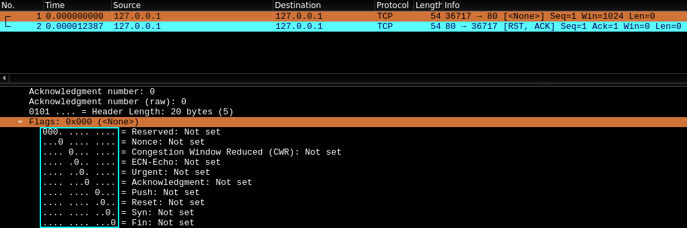

Network Mapper allows for gaining info on target system or network.

- An IP address or many for security audit.
Task 1
Step 1 is to scan the “landscape” of what you are attacking, need to establish what services are running on the targets which is called port scanning.
Ports are necessary for making multiple network requests or having multiple services available. Every computer has a total of 65535 available ports; however, many of these are registered as standard ports
- HTTP = port 80
- HTTPS = port 443
- Windows NETBIOS = port 139
- SMB = port 445
- these ports can be altered
MUST KNOW WHAT PORTS ARE OPEN in order for attack/ security.
Nmap tries to connect to all the ports and returns
- open
- closed
- filtered (firewall)
Task 2
Once you know the ports that are open, you start enumerating which services are running on each port.
Question: What networking constructs are used to direct traffic to the right application on a server?
Question: How many of these are considered “well-known”? 1024 and not 1023.
Task 3
Nmap is installed in Kali Linux.
nmap -hto get helpman nmapto get the manual
Question: What is the first switch listed in the help menu for a ‘Syn Scan’ (more on this later!)?
- look at SCAN TECHNIQUES,
-sSTCP SYN scans
Question: Which switch would you use for a “UDP scan”?
- look at SCAN TECHNIQUES,
-sUUDP scans
Question: Nmap provides a switch to detect the version of the services running on the target. What is this switch?
- look at OS DETECTION,
-Oenable OS detection
Question: Nmap provides a switch to detect the version of the services running on the target. What is this switch?
- look at SERVICE/VERSION DETECTION,
-sVprobe open ports to see service version
Question: The default output provided by nmap often does not provide enough information for a pentester. How would you increase the verbosity?
- look at OUTPUT,
-vincrease verbosity
Question: Verbosity level one is good, but verbosity level two is better! How would you set the verbosity level to two?
-vv
Question: We should always save the output of our scans – this means that we only need to run the scan once (reducing network traffic and thus chance of detection), and gives us a reference to use when writing reports for clients. What switch would you use to save the nmap results in three major formats?
- OUTPUT,
-oAoutput in 3 major formats at once
Question: What switch would you use to save the nmap results in a “normal” format?
- OUTPUT,
-oNoutput scan in normal format
Question: A very useful output format: how would you save results in a “grepable” format?
-oG
Question: This is a shorthand switch that activates service detection, operating system detection, a traceroute and common script scanning.
-A
Question: Nmap offers five levels of “timing” template. These are essentially used to increase the speed your scan runs at. Be careful though: higher speeds are noisier, and can incur errors! How would you set the timing template to level 5?
-T5timing template
Question: We can also choose which port(s) to scan. How would you tell nmap to only scan port 80?
- look at PORT SPECIFICATION,
-p,-p 80
Question: How would you tell nmap to scan ports 1000-1500?
-p 1000-1500
Question: How would you tell nmap to scan all ports?
-p-instead of a number after the p
Question: How would you activate a script from the nmap scripting library?
-script
Question: How would you activate all of the scripts in the “vuln” category?
-script=vuln
Task 4
There are 3 basic scan types:
- TCP connect scans
-sT - SYN half open scans
-sS - UDP scans
-sU
Less common scans:
- TCP null scans
-sN - TCP FIN scans
-sF - TCP Xmas scans
-sX
ICMP “ping” scan
Task 5
Transmission Control Protocol (TCP) is a connection-oriented protocol requiring a TCP three-way-handshake to establish a connection.
The 3-way handshake (the SYN <–> SYN/ACK –> ACK ):
- The terminal sends TCP request to target server with SYN flag
- the server says that they got the packet with SYN/ACK flags
- the terminal ends handshake by sending TCP request with ACK flag
If Nmap sends a TCP request to a closed port, the port will reply with RST (reset) flag.
If a port is open but hidden behind a firewall, a TCP request is sent but nothing is sent back, it is then labelled filtered. You can get the firewall to reply with a RST flag.
iptables -I INPUT -p tcp --dport <port> -j REJECT --reject-with tcp-reset
Question: Which RFC defines the appropriate behaviour for the TCP protocol? hint: RFC 793 was deprecated and replaced
- RFC 9293
Question: If a port is closed, which flag should the server send back to indicate this?
- RST
Task 6
The SYN scans -sS are used to scan the TCP port range of a target, called “half open scans” or “stealth scans”. The SYN scans sends back a RST TCP packet after it gets a SYN/ACK flag from the server (SYN <-===-> SYN//ACK ==-> RST).
- can be used for bypassing older intrusion detection systems looking for the 3-way handshake
- often not logged as only port connects are logged
- SYN scans are faster than TCP connect scans (avoiding 3-way handshake)
- SYN require
sudopermissions as they make new raw packets - unstable services can go down from SYN scans
The default Nmap scan is TCP, but SYN needs sudo.
- SYN scans closed port, the server sends RST packet
- SYN scans filteres port, the packet is dropped or spoofed with TCP reset
Question: There are two other names for a SYN scan, what are they?
- half-open, stealth
Question: Can Nmap use a SYN scan without Sudo permissions (Y/N)?
- n
Task 7
UDP scans are stateless, packets are sent and don’t care if they make it to the target. UDP scans -sU are faster but less quality, also are harder and slower to scan.
UDP scan sends packet to open port, there is no reply which is labelled as open or filtered (firewall). Rarely does UDP get a reply, but if it does it is labelled as open.
- if UDP scan sends packet to closed port, it should get a ICMP (ping) packet with a message “port unreachable” = labelled closed
- UDP scans take 20 minutes (very slow) to scan top 1000 ports
- UDP scan:
nmap -sU --top-ports 20 <target>scans the 20 most common UDP ports - if UDP scans a port used by a service, it will send a protocol payload instead of the usual empty UDP packets to get a reply
Question: If a UDP port doesn’t respond to an Nmap scan, what will it be marked as?
- open|filtered
Question: When a UDP port is closed, by convention the target should send back a “port unreachable” message. Which protocol would it use to do so?
- ICMP
Task 8
NULL, FIN and XMAS TCP port scans are less commonly used. All are used for stealthy use.
- NULL:
-sNTCP request is sent but no flags, this gets a RST reply if port is closed - FIN:
-sFTCP request is sent with FIN flag, this gets a RST reply if port is closed - XMAS:
-sXsends a malformed TCP packet and expects a RST reply for closed ports (christmas name as in Wireshark it looks like a christmas tree)
If the port is open then no reply to malformed packet (same for any firewall port).
NULL, FIN, XMAS can only label ports: open|filtered, closed, filtered (ICMP unreachable packet).
Many firewalls are configured to drop incoming TCP packets to blocked ports which have the SYN flag, sending requests without SYN flag == firewall bypass (not 100% effective).
Question: Which of the three shown scan types uses the URG flag?
- XMAS
Question: Why are NULL, FIN and Xmas scans generally used?
- firewall evasion
Question: Which common OS may respond to a NULL, FIN or Xmas scan with a RST for every port?
- Microsoft Window
Task 9
When the target is a black box, you need to get a map of the network structure of which IP addresses have active hosts with a “ping sweep” (not always accurate).
- ping sweep:
-sn,nmap -sn 192.168.0.1-254(CIDR notation) ornmap -sn 195.168.0.0/24 - this tells nmap to not scan any ports but use pings to ID targets
- sends TCP SYN packet to port 443 to target
- sends TCP ACK (root user) or SYN packet to port 80 to target
Question: How would you perform a ping sweep on the 172.16.x.x network (Netmask: 255.255.0.0) using Nmap? (CIDR notation)
nmap -sn 172.16.0.0/16
Task 10
Nmap Scripting Engine (NSE) is writtenin Lua programming language. The NSE has various categories including:
safewhich won’t affect the targetintrusivenot safe, likely affecting targetvulnscans for vulnerabilitiesexploitattempt to exploit a vulnerabilityauthattempt to bypass auth for running servicesbruteattempt to bruteforce credentials for running servicesdiscoveryattempt to query running services for further info about the network
Question: What language are NSE scripts written in?
- Lua
Question: Which category of scripts would be a very bad idea to run in a production environment?
- intrusive
Task 11
Working with the NSE scripts inside nmap commands.
--script=vuln--script=safe--script=http-fileupload-exploiteryou can dd more scripts with a comma- exploiting auth vulnerability
--script-args http-put.url=" " , http-put=" "
Question: What optional argument can the ftp-anon.nse script take?
- Reading the documentation and you compare the script arguments with what is required and get the answer of maxlist.
Task 12
Search for nmap scripts using the website and using Linux /usr/share/nmap/scripts.
- to search for installed scripts
/usr/share/nmap/scripts/script.dbfile, look at contenthead script.db - find scripts
grep "ftp" /usr/share/nmap/scripts/script.db - or
ls -l /usr/share/nmap/scripts/*ftp*
If you want a specific script you can download it
sudo wget -O /usr/share/nmap/scripts/<script-name>.nse https://svn.nmap.org/nmap/scripts/ <script-name> .nse
Question: Search for “smb” in the scripts. What is the filename of the script which determines the underlying OS of the SMB server?
smb-os-discovery.nse
Question: Read through this script. What does it depend on?
- hint: look for dependencies in the Lua script
- smb-brute
Task 13
There is a way to bypass firewall protection.
A Windows user will by default firewall block all ICMP packets. Using ping and nmap both use ICMP, this will label a target with firewall dead or not scan it. To avoid this use -Pn which does not ping the target host before scanning.
- don’t ping, treat host as active and scan target
Some useful switches:
-ffragment the packets, less likely to be detected--mtu <number>max transmission unit size for packets sent (multiple of 8)--scan-delay <time>msdelay between sending packets--badsumused to make invalid checksum for packets, used to see if there is a firewall
Question: Which simple (and frequently relied upon) protocol is often blocked, requiring the use of the -Pn switch?
- ICMP
Question: Which Nmap switch allows you to append an arbitrary length of random data to the end of packets? Use the nmap -h.
--data-length
Task 14
Launch the attackbox and target IP address. Open the terminal.
- type
ping IP_address. no packets returned
Question: Perform an Xmas scan on the first 999 ports of the target – how many ports are shown to be open or filtered?
nmap -sX IP_address -p 0-999
Question: There is a reason given for this – what is it? Note: The answer will be in your scan results. Think carefully about which switches to use – and read the hint before asking for help!
hint: Run this command with the -vv switch enabled. It’s good practice to always increase the verbosity in your scans.
no response
Question: Perform a TCP SYN scan on the first 5000 ports of the target – how many ports are shown to be open?
nmap IP address -p 0-5000 -vv, 5 open
Question: Open Wireshark (Wireshark room) and and perform a TCP Connect scan against port 80 on the target, monitoring the results.
- no answer needed
- did not do
Question: Deploy the ftp-anon script against the box. Can Nmap login successfully to the FTP server on port 21? (Y/N)
nmap -sV -sC <target>, found FileZilla ftpd